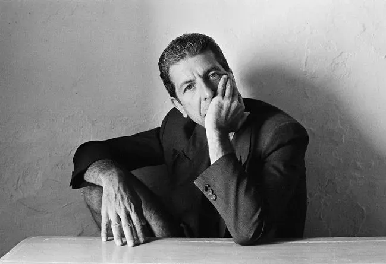

Galería Visual
 
Leonard Norman Cohen (1934–2016) fue más que un artista: fue una voz del alma humana. Poeta galardonado, cantautor profundo y novelista provocador. Desde Montreal al mundo, su obra tocó temas universales como el amor, la pérdida, la fe y el anhelo.
Más allá de la música, Cohen dejó un legado filosófico y literario. Su influencia se siente en generaciones de artistas y escritores que encuentran en su obra un refugio de belleza y verdad.
Esta no es solo una página web.
Es un santuario digital para uno de los más grandes poetas del siglo XX.
Es una oportunidad para construir cultura duradera.